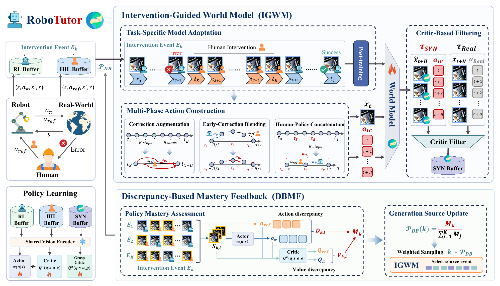
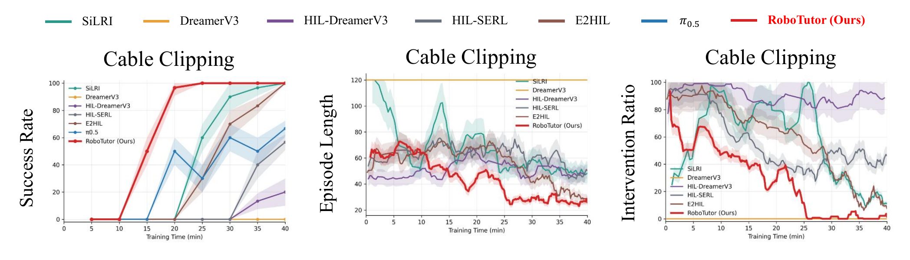
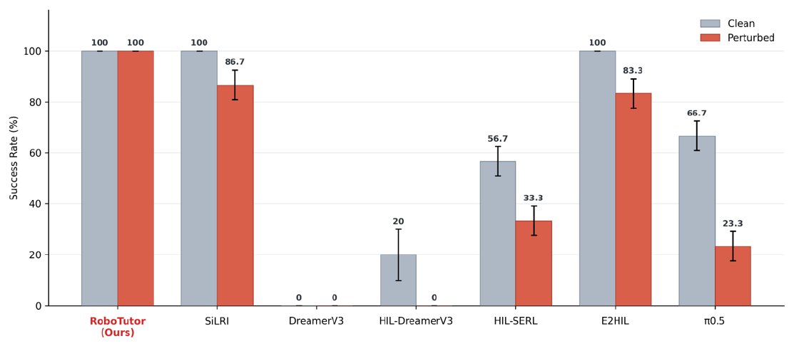
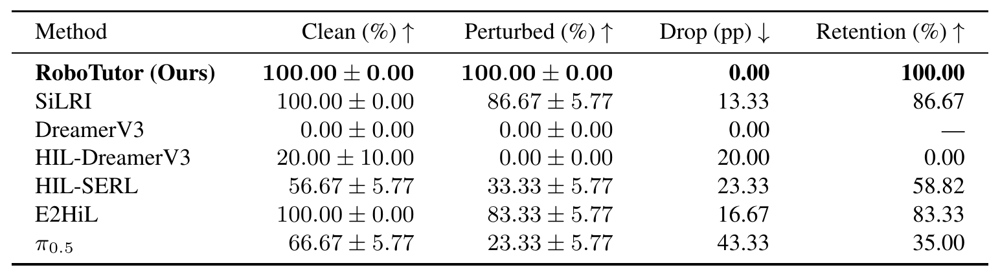

Robot learning / Project page
RoboTutor.
Real-World Visual Reinforcement Learning
with Interactive World Model Augmentation
A human correction is more than a demonstration. It also tells the robot where it went wrong, when help mattered, and how to resume on its own.
Explore paired rollouts01 / Method
From a correction to targeted practice.
RoboTutor selects real intervention windows, proposes alternative actions, and uses a LoRA-adapted action-conditioned video world model to predict their consequences. A critic screens synthetic practice before actor–critic updates and corrective behavior cloning. Discrepancies between the reference and the current policy guide which interventions to revisit.

02 / Real-robot results
Policy learning on cable clipping.
The quantitative evaluations below are from the training experiments. The counterfactual films further down were generated separately for qualitative inspection.

Robustness evaluation at the 40-minute checkpoint


03 / Paired world-model rollouts
One intervention, three kinds of practice.
Watch what changes when the world model sees the same real starting observation and the same diffusion seed, but gets a different sequence of 12 actions. Each film keeps both camera views intact.